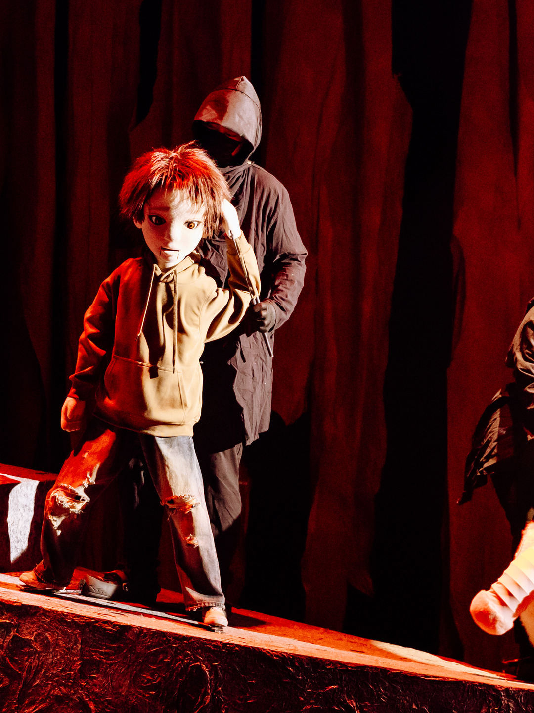
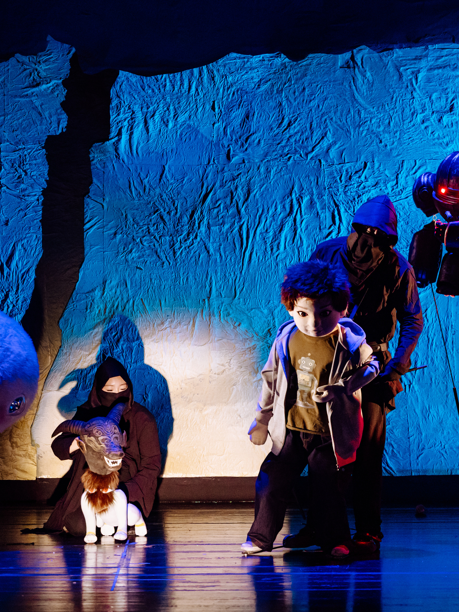
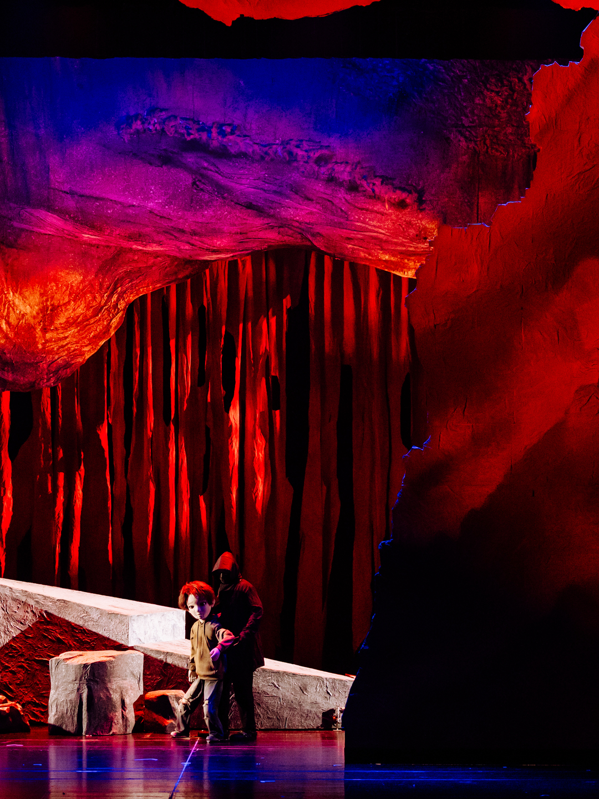
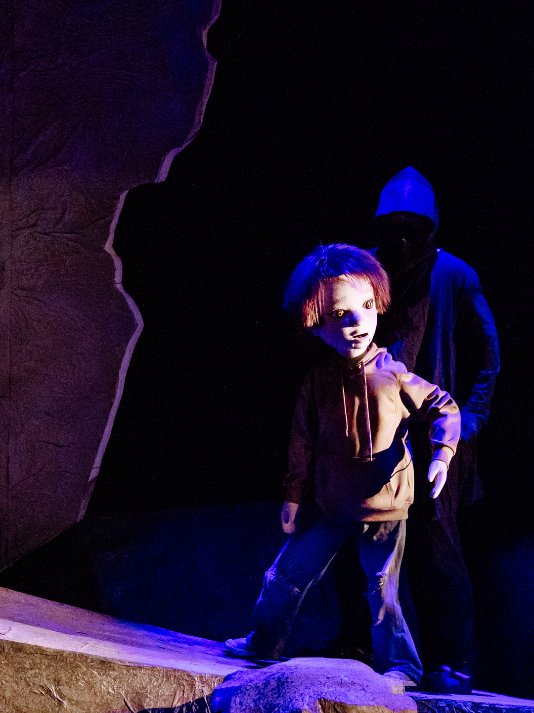
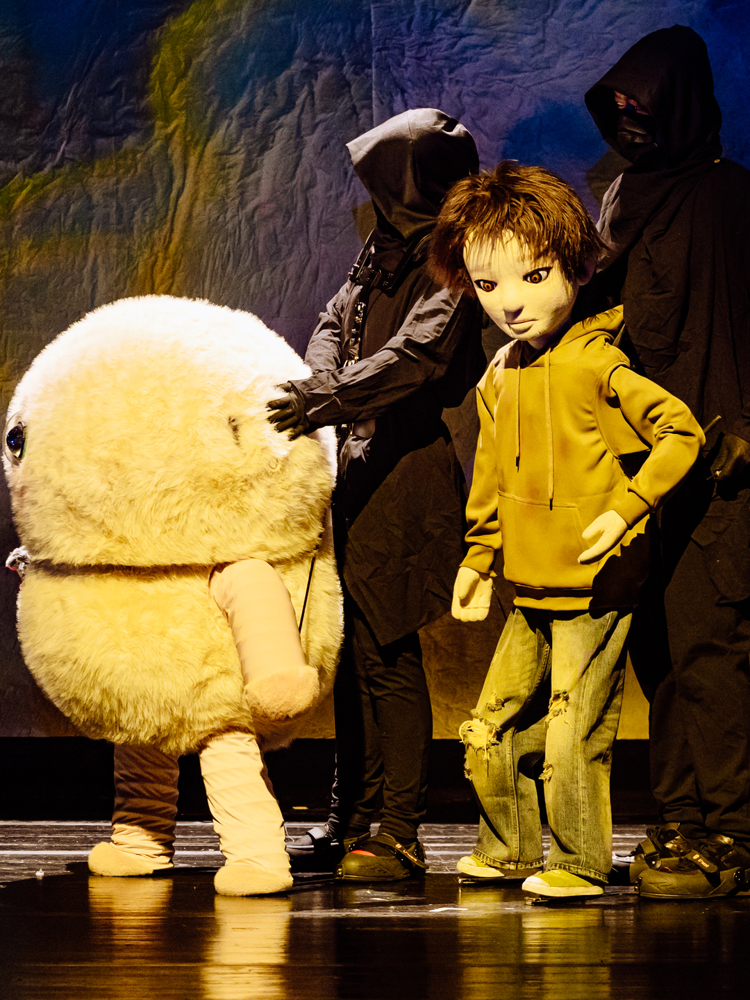

先把这件事写进备忘录

关注账号，城市与开票信息第一手发出。
留意你所在城市附近的大剧院档期。
给身边想看的人打个招呼，一起占座。

6 米 × 10 米的巨偶。
神兽宇宙：毕方、九尾狐、精卫、应龙。
90 分钟，4 岁以上可看。

多媒体与非遗木偶同台，国际音乐设计 Sid Peacock。
今年首演已在扬州运河大剧院落地。

具体城市、剧院、开票时间，会等官方公告后第一时间同步。
最好的故事不是被讲述的，而是被体验的。